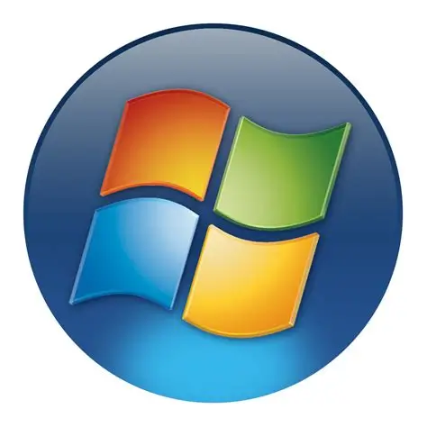

Become a CMD Explorer

Command Prompt becomes much easier once you understand how Windows organises files and folders.
Helpful Tips
- Read a command before running it.
- Use DIR to see what's inside a folder.
- Use CD to navigate.
- Use CLS to clean up the screen.
- Search for documentation when you're unsure.
Special Formatting
CMD can look intimidating, but you can learn it one command at a time. Naming a file with .bat at the end makes it a windows executable file. This lets you make runnable files!
Experiment carefully.
Never run a command you don't understand.
A very usefull tip i learned was watching tutorials. <-- Nope! False! It was actually experiminenting in a VM(virtual machine). Did i accidently delete system32 MULTIPLE times? YUP. But I learned and there is nothing better then coding for 5HOURS!!! Then to see it work.